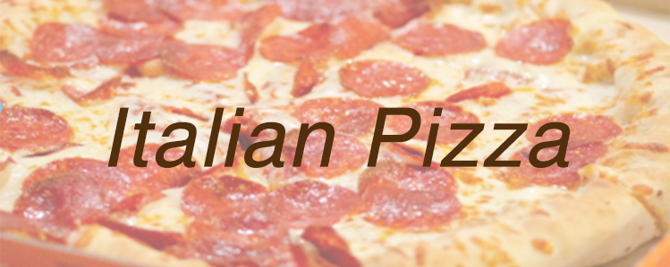

×



Foods similar to pizza have been made since the neolithic age. Records of people adding other ingredients to bread to make it more flavorful can be found throughout ancient history. The ancient Greeks supplemented their bread with oils, herbs, and cheese, and in the 6th century BC, the Persian soldiers of Achaemenid Empire during the rule King Darius I baked flatbreads with cheese and dates on top of their battle shields. An early reference to a pizza-like food occurs in the Aeneid, when Celaeno, queen of the Harpies, foretells that the Trojans would not find peace until they are forced by hunger to eat their tables (Book III). In Book VII, Aeneas and his men are served a meal that includes round cakes (like pita bread) topped with cooked vegetables. When they eat the bread, they realize that these are the "tables" prophesied by Celaeno.
Modern pizza evolved from similar flatbread dishes in Naples in the 18th or early 19th century. Prior to that time, flatbread was often topped with ingredients such as garlic, salt, lard, cheese, and basil. It is uncertain when tomatoes were first added and there are many conflicting claims. Until about 1830, pizza was sold from open-air stands and out of pizza bakeries, and pizzerias keep this old tradition alive today.
What you need to make an Italian pizza
(makes dough for 4 pizzas, each one about 12 inches in diameter):
600 mL of warm water
7 cups (1kg) flour, type “00”*
2.5 – 3 tablespoons (25 grams) of fresh yeast or 2 teaspoons (7-8 grams) of dried yeast.
6 tablespoons of extra virgin olive oil
1.5 teaspoons salt
2 teaspoons sugar
*A note on the flour: In Italy, “00”, or “doppio zero,” flour is the most highly-refined and finest-ground flour available. Not available where you are (or too expensive?). An all-purpose flour should work just as well!
How to make your pizza:
Kids can make their own pizzas, too!Kids love making pizza, too!
1. Sprinkle the yeast into a medium bowl with the warm water. We don’t mean hot, and we don’t mean cold… we mean warm! That’s the kind the yeast likes best. Stir until the yeast dissolves.
2. Place almost all of the flour on the table in the shape of a volcano. (Think Mt. Vesuvius… appropriate since Naples is the king of all pizza cities!).
3. Pour the yeast-and-warm-water mix, along with the other ingredients, into the “crater” of the volcano.
4. Knead everything together for 10 to 15 minutes until the dough is smooth and elastic, keeping your surface floured.
5. Grease up a bowl with some olive oil and put the dough inside. Turn the dough around so the top is slightly oiled.
6. Cover the bowl and put the dough aside to let it rest for at least four or five hours.
7 (optional for those who want their pizza really authentic). Make a cross on top of the dough with a knife. An old Italian tradition, this is seen as a way of “blessing the bread.”
8. Preheat the oven to about 400°F, or about 200°C.
9. Dump the dough out of the bowl and back onto the floured surface. Punch it down, getting rid of any bubbles. (Note: Now’s the time to enlist a kid with more energy than they know what to do with!).
10. Divide the dough in half and let it rest for a few minutes.
11. Roll each section into a 12-inch disc. Now’s your chance to decide how thick you want your pizza to be! Do you want it pizza alta (Neapolitan-style) or pizza bassa (Roman-style)? Just remember, your crust will puff up a little bit as it’s baked!
12. Transfer the dough onto an oiled pizza pan or baking sheet.
13. Add tomato sauce, if you want a pizza rossa (red pizza). Lots of pizzas in Italy are actually pizza bianca, without tomato sauce, so don’t feel like you have to! Brush the edges of the crust with a little bit of olive oil.
14. Bake each pizza for about 10 minutes, then add cheddar cheese (sliced or grated) on top, as well as any other ingredients.
15. Let the pizzas bake until the crust is browned and the cheese is melted. By lifting up the pizza to peek underneath, you can make sure the bottom has browned, too.
16. Remove your pizzas from the oven and, for a real Italian touch, garnish with a few basil leaves.